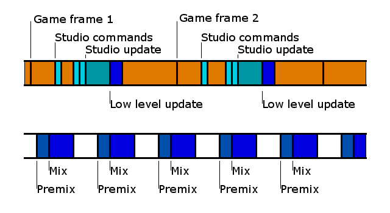
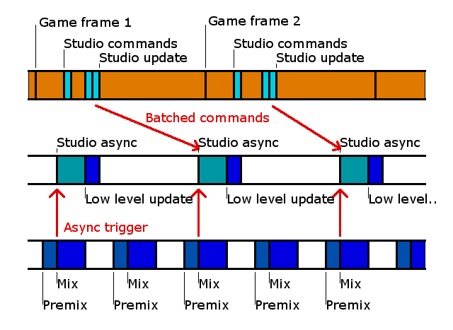

FMOD API User Manual 2.01
This section will describe how Studio execution works in regards to threads.
If Studio::System::initialize is called with FMOD_STUDIO_INIT_SYNCHRONOUS_UPDATE, then Studio will be created in synchronous mode. In this mode, all Studio API commands are executed during Studio::System::update.
As part of that Studio update, it will automatically call the core System::update to ensure that the core system is updated properly.

The above diagram shows Studio commands being called from the game thread in Studio. It also shows the core mixer thread, which is triggered based on the hardware output device. The core mixer thread normally has a period of 5ms, 10ms, or 20ms, depending on the platform. It can also be customized with System::setDSPBufferSize and System::setSoftwareFormat.
When running in this mode, Studio must deal with the fact that the core mix can execute at any time. For instance, an event may have two timelocked instruments that should start at the same time. Studio schedules sounds a mix block later so that even if the mix jumps in, all scheduled events will occur in the same mix block.
The default operation is for Studio to create its own asynchronous thread for execution. In this mode, Studio API commands are enqueued and executed in the Studio asynchronous thread. The commands are batched up so that they are only sent to the asynchronous thread at the end of the next Studio::System::update. This prevents some Studio commands from executing earlier than others, which could cause glitches. For instance, if an event position is updated, and the listener position is updated, those two commands will always be executed together.

In asynchronous mode, the Studio processing occurs every 20ms and is triggered off the core mixer. The core mix is split into parts, premix, midmix and postmix. It is the core premix that executes any enqueued core commands and updates DSP clocks. By triggering the asynchronous Studio processing at the end of the premix, Studio can assume that the mix isn't going to jump in as the asynchronous update is executing. Unlike the first case, Studio can also assume that the update will be called in a timely manner, even if the game's main thread has a framerate spike.
The size of the Studio asynchronous command buffer can be customized by calling Studio::System::setAdvancedSettings. It there is not enough space for commands, then a stall will occur until the asynchronous update has consumed enough commands. Studio::System::getBufferUsage can be used to measure if any stalls have occurred due to the command buffer not being large enough.
Another command situation is for the game to have its own worker thread that invokes Studio using FMOD_STUDIO_INIT_SYNCHRONOUS_UPDATE. This is very similar to the first diagram, except that execution is in a worker rather than the game thread. It is up to the game thread how it wishes to synchronize with the rest of the game. It could be triggered per game frame, or with a fixed period.
In this mode, it is up to the developer to ensure that commands are not split across system updates. For example, consider the case where the game thread issues commands for the worker thread, and the worker thread wakes up periodically to execute those commands. In that case, the worker thread may wake up and execute some commands but not others, causing subtle issues with the sound playback. Instead, the commands to the worker thread should be batched up to avoid slicing commands. Or even better, just use the inbuilt asynchronous mode to do the command batching instead.